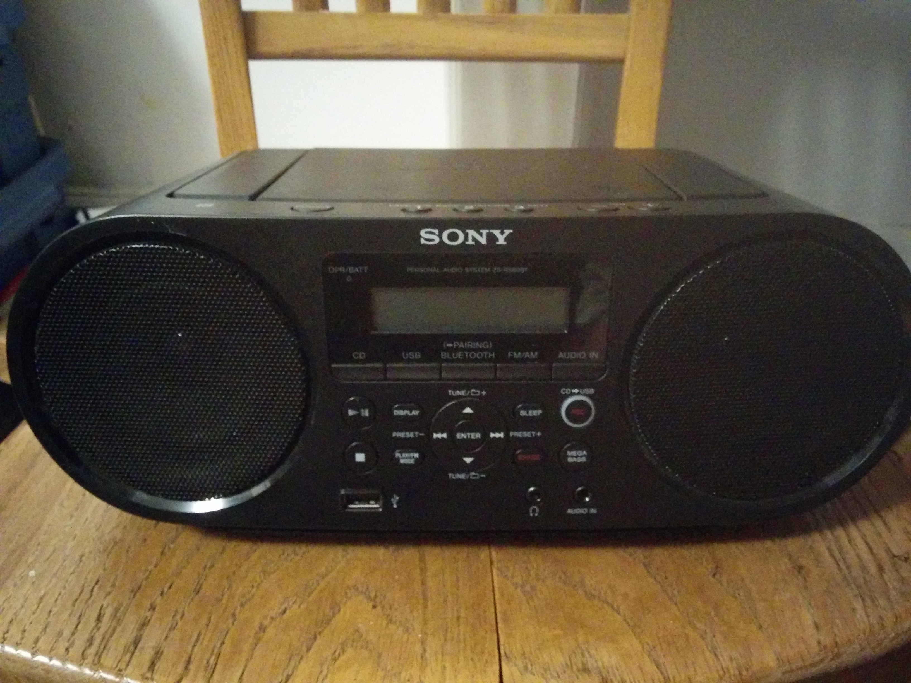
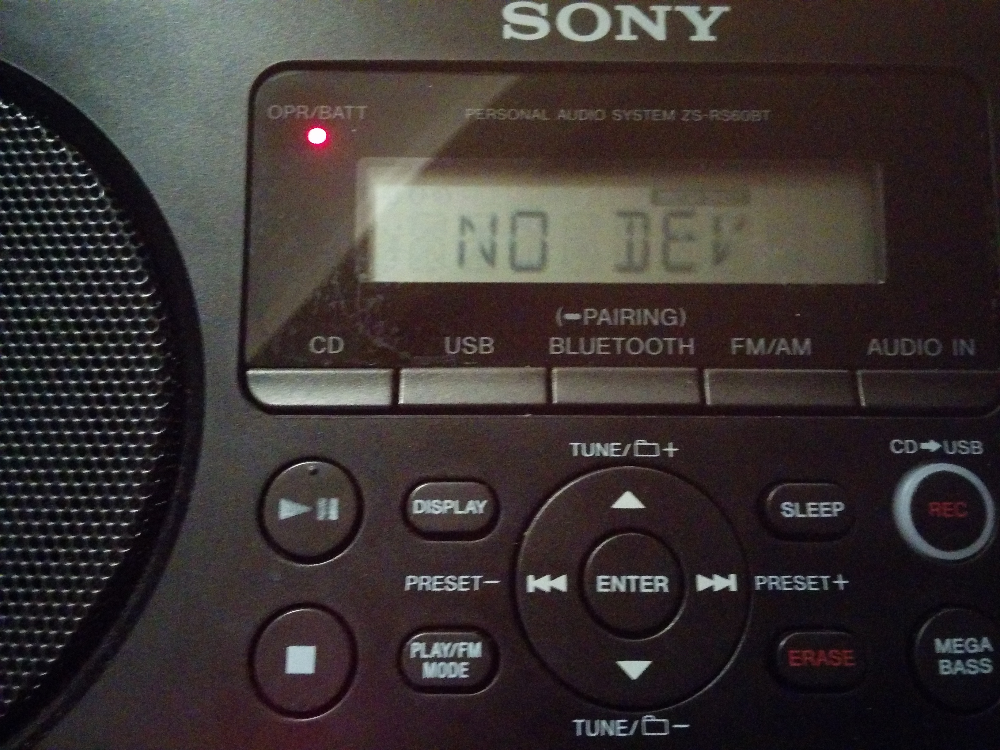
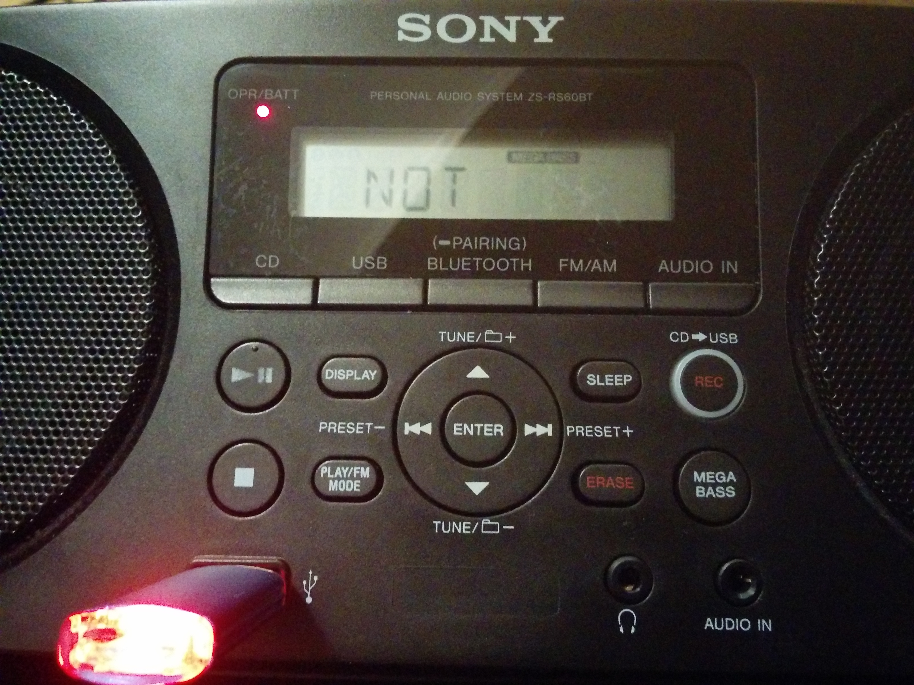
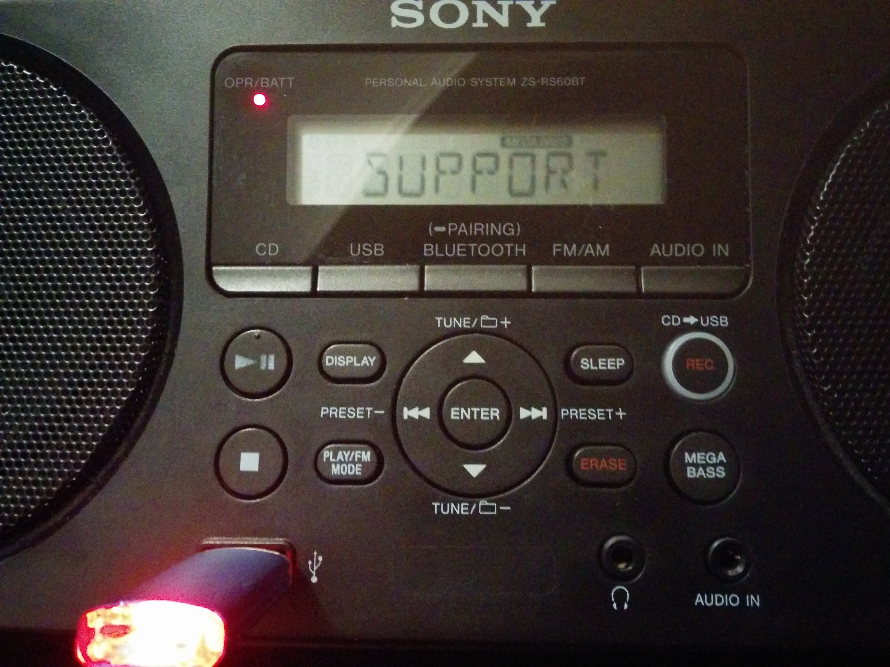
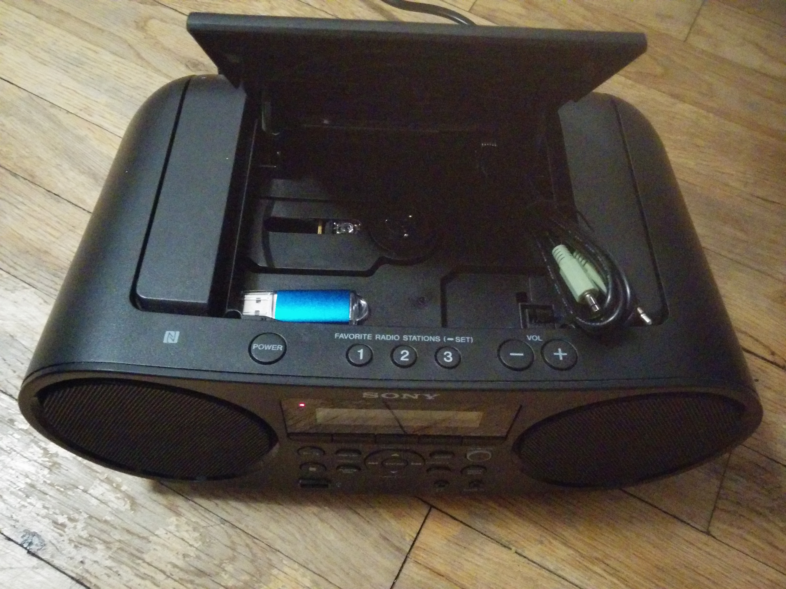
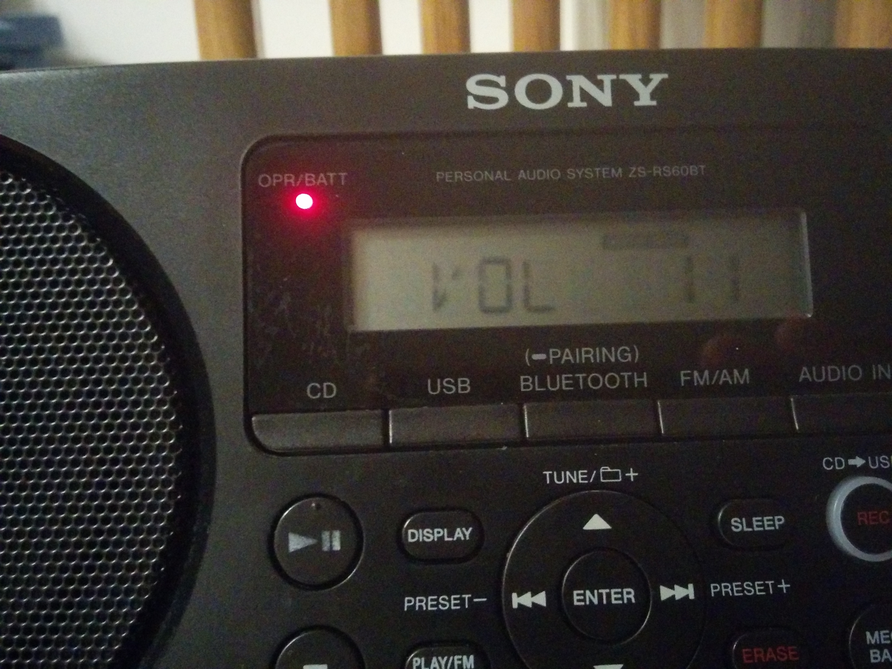

In an earlier post, I got USB audio working on my used, manual, 2013 Honda Civic EX. Today I’ll do the same for a Sony ZS-RS60BT boombox.
|  |
| Here it is in all its used glory after a little cleaning. |
I decided I should get a small portable boombox to practice my dope dance moves. I currently still suck because I think I spend more time computering than out on the floor. In any case, in a stroke of luck, I happened upon a used boombox that was getting discarded due to a broken CD player. Nobody seemed either able or interested in getting USB audio working, so I took it home and gave it a go!
Some initial attempts at formatting the USB key ended up with this:
|  |
| The device printing a NO DEV message. |
Others got it showing a marquee message of “NOT SUPPORT”.
|  |
| NOT! |
|  |
| ... NOT SUPPORT |
Hmmm, I guess we have to go really old school here.
The code inside this thing must be really old. So after some digging, I found out the magic incantation. The device expects a drive with a single partition, labelled in a magic way.
My usb drive was /dev/sdb. You can find this out by watching dmesg --follow
when you put it in…
# dmesg --follow
[143018.765853] usb 2-1: new SuperSpeed Gen 1 USB device number 5 using xhci_hcd
[143018.783603] usb 2-1: New USB device found, idVendor=090c, idProduct=1000, bcdDevice=11.00
[143018.783606] usb 2-1: New USB device strings: Mfr=1, Product=2, SerialNumber=3
[143018.783607] usb 2-1: Product: USB Flash Disk
[143018.783608] usb 2-1: Manufacturer: General
[143018.783609] usb 2-1: SerialNumber: 0123456789001234
[143018.789512] usb-storage 2-1:1.0: USB Mass Storage device detected
[143018.791203] usb-storage 2-1:1.0: Quirks match for vid 090c pid 1000: 400
[143018.791371] scsi host2: usb-storage 2-1:1.0
[143020.047718] scsi 2:0:0:0: Direct-Access General USB Flash Disk 1100 PQ: 0 ANSI: 6
[143020.048078] sd 2:0:0:0: Attached scsi generic sg1 type 0
[143020.048561] sd 2:0:0:0: [sdb] 31457280 512-byte logical blocks: (16.1 GB/15.0 GiB)
[143020.048980] sd 2:0:0:0: [sdb] Write Protect is off
[143020.048983] sd 2:0:0:0: [sdb] Mode Sense: 43 00 00 00
[143020.049433] sd 2:0:0:0: [sdb] Write cache: enabled, read cache: enabled, doesn't support DPO or FUA
[143020.060954] sdb:
[143020.063291] sd 2:0:0:0: [sdb] Attached SCSI removable disk…or by being clever and looking through lsblk.
# lsblk
NAME MAJ:MIN RM SIZE RO TYPE MOUNTPOINT
[snip]
sdb 8:16 1 15G 0 disk I popped open fdisk next. You can use p to print the current state. You can
type m for the menu. You’ll want to use n to make a new partition, then use
all the defaults. After that you’ll need to change the partition type with t.
The code we want is W95 FAT32 which is represented by a b. Select that and
then exit with w to write everything to disk. My logs of this are included:
james@computer:~$ sudo fdisk /dev/sdb
Welcome to fdisk (util-linux 2.35.2).
Changes will remain in memory only, until you decide to write them.
Be careful before using the write command.
Command (m for help): p
Disk /dev/sdb: 15 GiB, 16106127360 bytes, 31457280 sectors
Disk model: USB Flash Disk
Units: sectors of 1 * 512 = 512 bytes
Sector size (logical/physical): 512 bytes / 512 bytes
I/O size (minimum/optimal): 512 bytes / 512 bytes
Disklabel type: dos
Disk identifier: 0x390298e3
Command (m for help): n
Partition type
p primary (0 primary, 0 extended, 4 free)
e extended (container for logical partitions)
Select (default p): p
Partition number (1-4, default 1): 1
First sector (2048-31457279, default 2048):
Last sector, +/-sectors or +/-size{K,M,G,T,P} (2048-31457279, default 31457279):
Created a new partition 1 of type 'Linux' and of size 15 GiB.
Partition #1 contains a vfat signature.
Do you want to remove the signature? [Y]es/[N]o: Y
The signature will be removed by a write command.
Command (m for help): t
Selected partition 1
Hex code (type L to list all codes): L
0 Empty 24 NEC DOS 81 Minix / old Lin bf Solaris
1 FAT12 27 Hidden NTFS Win 82 Linux swap / So c1 DRDOS/sec (FAT-
2 XENIX root 39 Plan 9 83 Linux c4 DRDOS/sec (FAT-
3 XENIX usr 3c PartitionMagic 84 OS/2 hidden or c6 DRDOS/sec (FAT-
4 FAT16 <32M 40 Venix 80286 85 Linux extended c7 Syrinx
5 Extended 41 PPC PReP Boot 86 NTFS volume set da Non-FS data
6 FAT16 42 SFS 87 NTFS volume set db CP/M / CTOS / .
7 HPFS/NTFS/exFAT 4d QNX4.x 88 Linux plaintext de Dell Utility
8 AIX 4e QNX4.x 2nd part 8e Linux LVM df BootIt
9 AIX bootable 4f QNX4.x 3rd part 93 Amoeba e1 DOS access
a OS/2 Boot Manag 50 OnTrack DM 94 Amoeba BBT e3 DOS R/O
b W95 FAT32 51 OnTrack DM6 Aux 9f BSD/OS e4 SpeedStor
c W95 FAT32 (LBA) 52 CP/M a0 IBM Thinkpad hi ea Linux extended
e W95 FAT16 (LBA) 53 OnTrack DM6 Aux a5 FreeBSD eb BeOS fs
f W95 Ext’d (LBA) 54 OnTrackDM6 a6 OpenBSD ee GPT
10 OPUS 55 EZ-Drive a7 NeXTSTEP ef EFI (FAT-12/16/
11 Hidden FAT12 56 Golden Bow a8 Darwin UFS f0 Linux/PA-RISC b
12 Compaq diagnost 5c Priam Edisk a9 NetBSD f1 SpeedStor
14 Hidden FAT16 <3 61 SpeedStor ab Darwin boot f4 SpeedStor
16 Hidden FAT16 63 GNU HURD or Sys af HFS / HFS+ f2 DOS secondary
17 Hidden HPFS/NTF 64 Novell Netware b7 BSDI fs fb VMware VMFS
18 AST SmartSleep 65 Novell Netware b8 BSDI swap fc VMware VMKCORE
1b Hidden W95 FAT3 70 DiskSecure Mult bb Boot Wizard hid fd Linux raid auto
1c Hidden W95 FAT3 75 PC/IX bc Acronis FAT32 L fe LANstep
1e Hidden W95 FAT1 80 Old Minix be Solaris boot ff BBT
Hex code (type L to list all codes): b
Changed type of partition 'Linux' to 'W95 FAT32'.
Command (m for help): p
Disk /dev/sdb: 15 GiB, 16106127360 bytes, 31457280 sectors
Disk model: USB Flash Disk
Units: sectors of 1 * 512 = 512 bytes
Sector size (logical/physical): 512 bytes / 512 bytes
I/O size (minimum/optimal): 512 bytes / 512 bytes
Disklabel type: dos
Disk identifier: 0x390298e3
Device Boot Start End Sectors Size Id Type
/dev/sdb1 2048 31457279 31455232 15G b W95 FAT32
Filesystem/RAID signature on partition 1 will be wiped.
Command (m for help): w
The partition table has been altered.
Calling ioctl() to re-read partition table.
Syncing disks.Finally, let’s build a filesystem.
# mkfs.vfat -F 32 -n BREAKBEATS /dev/sdb1
mkfs.fat 4.1 (2017-01-24)Make sure that your label is all UPPERCASE if you decide to use one. After this I mounted the partition, and copied over some non-copyrighted mp3’s to it. It will even read into nested folders.
You might want to consider using fatsort -n /dev/sdb1 if you want to get
things playing in their desired filesystem order. I explained this in my earlier
car audio article. For this
use-case, I didn’t bother to because all my break beats are random tracks that
don’t have a particular album order anyways!
| It shows the title on insertion! |
When plugged-in or running off of batteries, there is a small amount of phantom draw, so I take out one battery when it’s not in use. (The 6x1.5V C cell’s are in series, so you can remove any of them to disconnect the circuit.)
As a bonus, it even comes with a storage drawer for your AUX cable and extra USB drives!
|  |
| Store some stuff here if you don't care about breaking the CD player! |
And here’s one last thing to make you all jealous… My machine’s volume can go up to eleven.
|  |
| Up to eleven! |
If anyone in the Montreal area wants to break/pop with me, please say hi.
Happy Hacking,
James
You can follow James on Twitter for more frequent updates and other random thoughts.
You can support James on GitHub if you'd like to help sustain this kind of content.
You can support James on Patreon if you'd like to help sustain this kind of content.
Your comment has been submitted and will be published if it gets approved.
Click here to see the patch you generated.
{kind=link}
{kind=link}
{kind=link}
{kind=link}
{kind=link}
{kind=link}
Comments
Nothing yet.
Post a comment